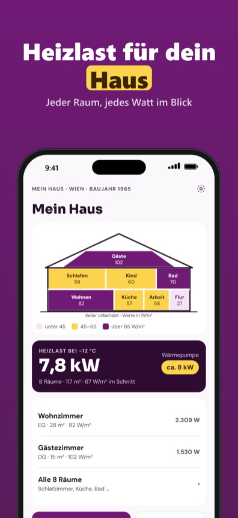
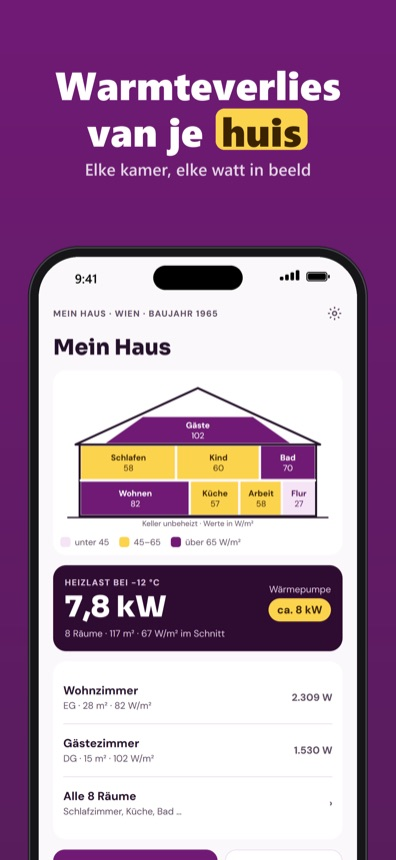
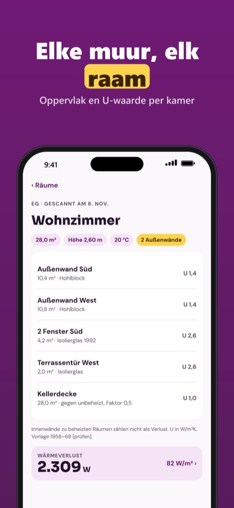

Raumscan für die Wärmepumpe
Bald im App Store

Thermalo hilft Hausbesitzern, vor dem Gespräch mit dem Installateur die eigene Heizlast zu kennen. Du legst dein Haus mit Baujahr, Haustyp und Ort an; Thermalo setzt typische U-Werte der Bauepoche und die Auslegungstemperatur deines Orts als Startpunkt. Dann scannst du jeden Raum mit der Kamera (auf Geräten mit LiDAR) oder misst ihn mit dem Maßband. Für jeden Raum siehst du den Wärmeverlust durch Wände, Fenster, Türen und Lüftung, für das ganze Haus die Heizlast und eine Größenklasse für die Wärmepumpe. Der Heizkörper-Check zeigt, welche Räume mit 55, 45 oder 35 °C Vorlauf warm werden, und Szenarien vergleichen, was neue Fenster oder ein gedämmtes Dach ändern.
Ein Projekt mit drei Räumen, von Hand gemessen, samt Heizlast und Wärmepumpen-Größe geht ohne Kauf. Thermalo Plus ist ein Einmalkauf: Raum-Scan, unbegrenzt Räume und Projekte, Heizkörper-Check für alle Räume, Szenarien und PDF-Bericht. Kein Abo.
Thermalo ist eine Planungshilfe nach einem vereinfachten Verfahren (Grundlage EN 12831) und ersetzt keine Heizlastberechnung durch Fachbetrieb oder Energieberater. U-Werte und Klimadaten sind eigene Tabellen auf Basis öffentlicher Gebäudetypologien. Thermalo steht in keiner Verbindung zu Behörden, Verbänden oder Herstellern.
Terms of Use (EULA): https://www.apple.com/legal/internet-services/itunes/dev/stdeula/
Kamerscan voor je warmtepomp
Binnenkort in de App Store


Thermalo helpt huiseigenaren om vóór het gesprek met de installateur het warmteverlies van hun eigen huis te kennen. Je legt je huis vast met bouwjaar, woningtype en plaats; Thermalo gebruikt typische U-waarden uit die bouwperiode en de ontwerptemperatuur van je plaats als startpunt. Daarna scan je elke kamer met de camera (op toestellen met LiDAR) of meet je hem met een rolmaat. Per kamer zie je het verlies via muren, ramen, deuren en ventilatie, voor het hele huis het totaal en een vermogensklasse voor de warmtepomp. De radiatorcheck laat zien welke kamers warm worden met 55, 45 of 35 °C aanvoer, en scenario's vergelijken wat nieuwe ramen of een geïsoleerd dak veranderen.
Eén project met drie kamers, met de hand gemeten, inclusief warmteverlies en maat warmtepomp werkt zonder aankoop. Thermalo Plus is een eenmalige aankoop: kamerscan, onbeperkt kamers en projecten, radiatorcheck voor alle kamers, scenario's en PDF-rapport. Geen abonnement.
Thermalo is een planningshulp volgens een vereenvoudigde methode (basis EN 12831) en vervangt geen warmteverliesberekening door een installateur of energieadviseur. U-waarden en klimaatgegevens zijn eigen tabellen op basis van openbare woningtypologieën. Thermalo is niet verbonden aan overheden, branchevereniging of fabrikanten.
Terms of Use (EULA): https://www.apple.com/legal/internet-services/itunes/dev/stdeula/